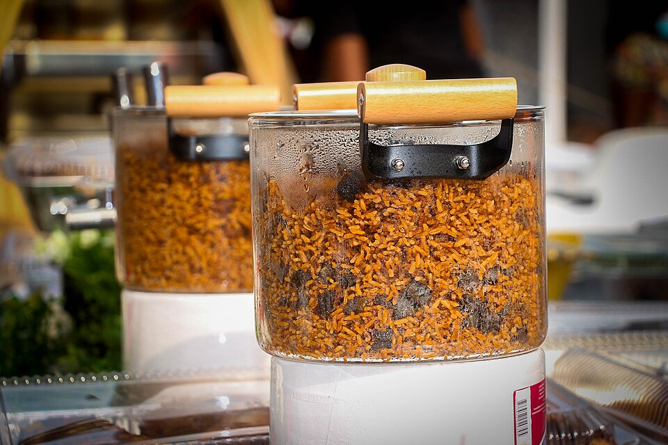

Home
Jollof Rice

Description
Jollof rice is a beloved West African dish made with rice, tomatoes, onions, and spices. It's vibrant, flavorful, and often served at celebrations and family gatherings.
Ingredients
- 2 cups long grain rice
- 1 can tomato paste
- 2 fresh tomatoes
- 1 onion
- 1 bell pepper
- Seasoning cubes
- Salt and pepper
- Vegetable oil
Steps
- Blend tomatoes, onion, and pepper into a smooth paste.
- Heat oil and fry the tomato paste until reduced.
- Add seasonings and stir well.
- Add washed rice and water, then cover to cook.
- Simmer until rice is soft and flavorful.